install.packages("tidyverse")
install.packages("factoextra")
install.packages("MASS")
install.packages("psych")NFL球员PCA分析
安装包
加载包
library(tidyverse)
library(factoextra)
library(psych)数据文件

 点击下载数据文件: NFL.xlsx
点击下载数据文件: NFL.xlsx 第1步 评估数据是否适合做PCA
library(readxl)
data <- read_excel("NFL.xlsx")
#提取data中的第5至12列，保存为combine
combine <- data[, 5:12]
library(psych)
KMO(combine)Kaiser-Meyer-Olkin factor adequacy
Call: KMO(r = combine)
Overall MSA = 0.87
MSA for each item =
height weight forty vertical bench broad_jump three_cone
0.80 0.80 0.91 0.91 0.74 0.89 0.91
shuttle
0.92 bartlett.test(combine)
Bartlett test of homogeneity of variances
data: combine
Bartlett's K-squared = 89371, df = 7, p-value < 2.2e-16第2步 估计PCA
#方法一：调用prcomp函数
combine.pr <- prcomp(combine, scale = TRUE)
combine.prStandard deviations (1, .., p=8):
[1] 2.3679065 0.9227977 0.7890378 0.6134782 0.4681091 0.3717784 0.3483419
[8] 0.2526648
Rotation (n x k) = (8 x 8):
PC1 PC2 PC3 PC4 PC5
height 0.2913200 -0.36243690 -0.78456426 0.201411503 -0.10676615
weight 0.3982567 -0.23599332 -0.08084940 0.006795590 0.19904888
forty 0.3967636 0.08177256 -0.02806160 0.007186135 0.47533576
vertical -0.3467039 -0.37295634 -0.11888605 -0.570750251 0.50876800
bench 0.2433913 -0.73405585 0.56077575 0.100768662 -0.16400782
broad_jump -0.3707226 -0.29425658 -0.20956737 -0.282435248 -0.38806157
three_cone 0.3779002 0.12306906 0.06454279 -0.546224235 0.08716904
shuttle 0.3733848 0.16307221 -0.02114816 -0.495272480 -0.52830179
PC6 PC7 PC8
height 0.04131390 -0.25540971 -0.22209123
weight -0.03852389 0.23485745 0.82634941
forty -0.10347494 0.61777481 -0.46557052
vertical 0.36727384 -0.07881529 -0.02938450
bench 0.01827782 -0.06658600 -0.21361784
broad_jump -0.51246785 0.48890122 0.00708534
three_cone -0.56866804 -0.45335440 -0.05483418
shuttle 0.51465642 0.20678970 -0.03889983#方法二：计算combine的相关系数矩阵的特征值和特征向量
combine %>% cor() %>% eigen()eigen() decomposition
$values
[1] 5.60698132 0.85155552 0.62258070 0.37635549 0.21912616 0.13821921 0.12134208
[8] 0.06383951
$vectors
[,1] [,2] [,3] [,4] [,5] [,6]
[1,] -0.2913200 -0.36243690 0.78456426 -0.201411503 -0.10676615 0.04131390
[2,] -0.3982567 -0.23599332 0.08084940 -0.006795590 0.19904888 -0.03852389
[3,] -0.3967636 0.08177256 0.02806160 -0.007186135 0.47533576 -0.10347494
[4,] 0.3467039 -0.37295634 0.11888605 0.570750251 0.50876800 0.36727384
[5,] -0.2433913 -0.73405585 -0.56077575 -0.100768662 -0.16400782 0.01827782
[6,] 0.3707226 -0.29425658 0.20956737 0.282435248 -0.38806157 -0.51246785
[7,] -0.3779002 0.12306906 -0.06454279 0.546224235 0.08716904 -0.56866804
[8,] -0.3733848 0.16307221 0.02114816 0.495272480 -0.52830179 0.51465642
[,7] [,8]
[1,] 0.25540971 0.22209123
[2,] -0.23485745 -0.82634941
[3,] -0.61777481 0.46557052
[4,] 0.07881529 0.02938450
[5,] 0.06658600 0.21361784
[6,] -0.48890122 -0.00708534
[7,] 0.45335440 0.05483418
[8,] -0.20678970 0.03889983combine.pr$sdev^2[1] 5.60698132 0.85155552 0.62258070 0.37635549 0.21912616 0.13821921 0.12134208
[8] 0.06383951#查看主成分的方差贡献率、累计方差贡献率
summary(combine.pr)Importance of components:
PC1 PC2 PC3 PC4 PC5 PC6 PC7
Standard deviation 2.3679 0.9228 0.78904 0.61348 0.46811 0.37178 0.34834
Proportion of Variance 0.7009 0.1064 0.07782 0.04704 0.02739 0.01728 0.01517
Cumulative Proportion 0.7009 0.8073 0.88514 0.93218 0.95957 0.97685 0.99202
PC8
Standard deviation 0.25266
Proportion of Variance 0.00798
Cumulative Proportion 1.00000#查看第1主成分载荷
combine.pr$rotation[,1:2] PC1 PC2
height 0.2913200 -0.36243690
weight 0.3982567 -0.23599332
forty 0.3967636 0.08177256
vertical -0.3467039 -0.37295634
bench 0.2433913 -0.73405585
broad_jump -0.3707226 -0.29425658
three_cone 0.3779002 0.12306906
shuttle 0.3733848 0.16307221PC1含义解释
PC1对所有变量的系数（载荷）多数为正，主要由体重（weight）和速度/敏捷相关（forty、three_cone、shuttle）指标主导。
broad_jump和vertical为负系数，表明跳跃能力好的个体PC1得分低。
PC1可以理解为“体型+速度/敏捷主成分”，与跳跃能力呈负相关。
PC2含义解释
PC2主要由卧推（bench），其次是vertical、height、broad_jump，且系数均为负，说明这些能力高的人在PC2得分低。
PC2可以理解为“力量+弹跳能力逆向主成分”。
第3步 确定保留的主成分的个数
# 计算各个主成分的方差
pr.var <- combine.pr$sdev^2
pr.var[1] 5.60698132 0.85155552 0.62258070 0.37635549 0.21912616 0.13821921 0.12134208
[8] 0.06383951# 计算各个主成分的方差贡献率
pve <- pr.var/sum(pr.var)
pve[1] 0.700872665 0.106444440 0.077822587 0.047044437 0.027390770 0.017277401
[7] 0.015167760 0.007979939#绘制各个主成分的方差贡献率
plot(pve, xlab = "Principal Component",
ylab = "Proportion of Variance Explained",
ylim = c(0, 1), type = "b")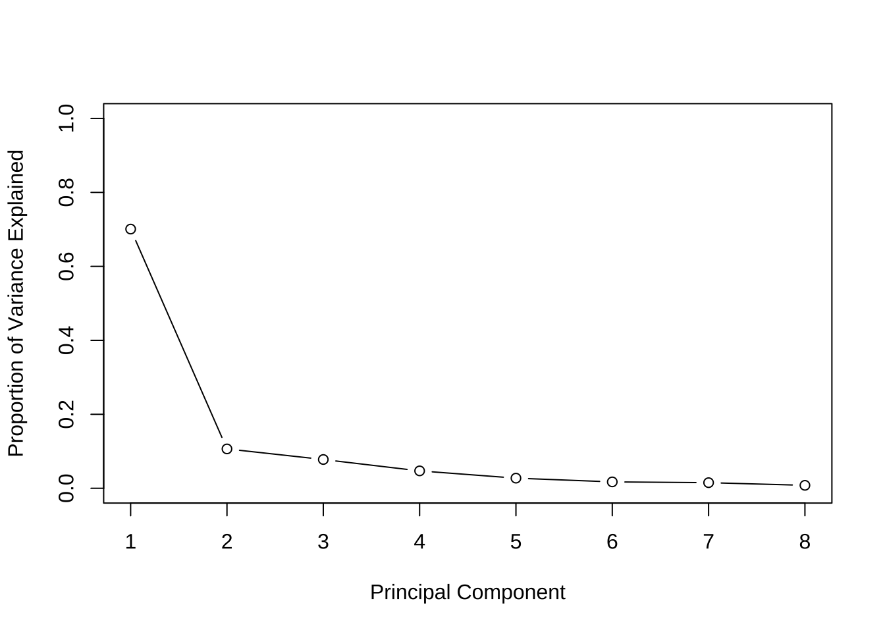
# 绘制累计方差贡献率
plot(cumsum(pve), xlab = "Principal Component",
ylab = "Cumulative Proportion of Variance Explained",
ylim = c(0, 1), type = "b")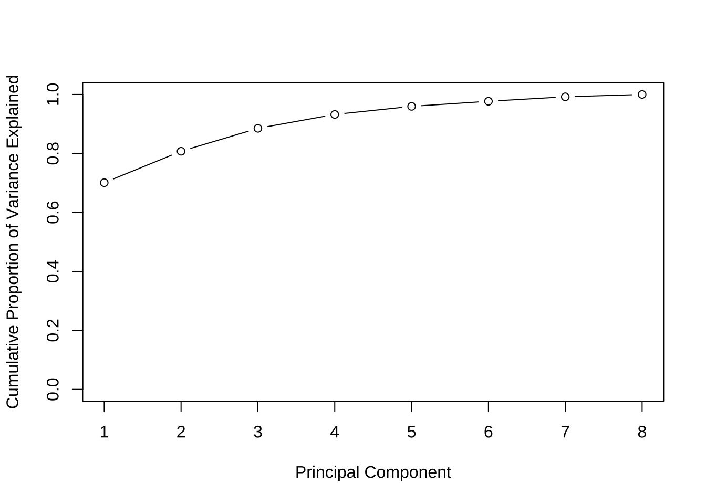
# 绘制碎石图
library(factoextra)
fviz_eig(combine.pr)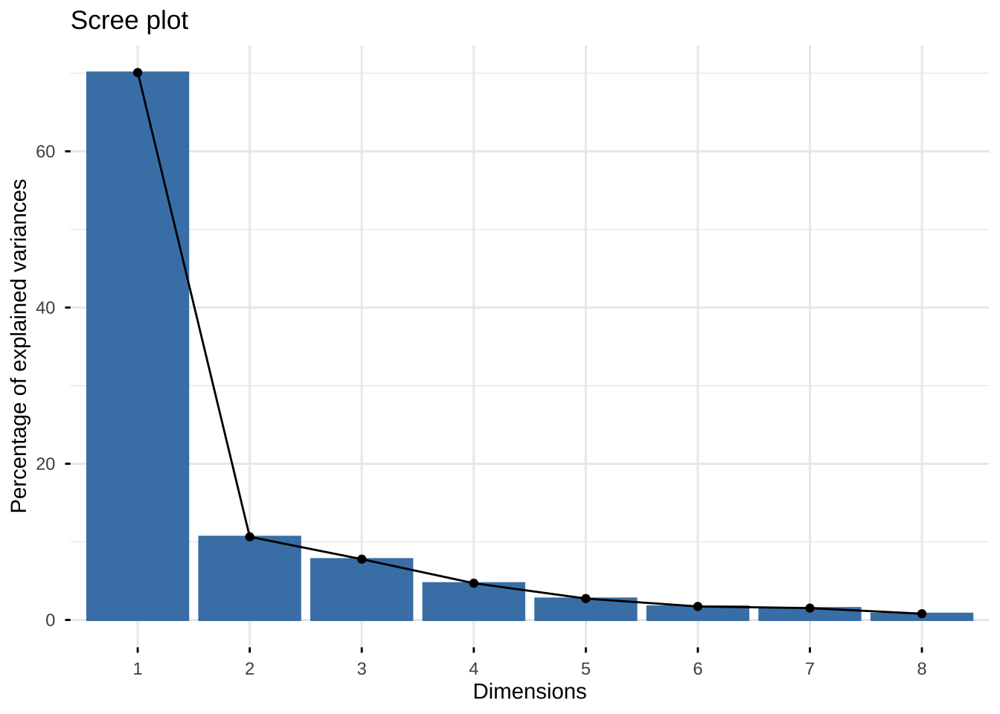
第4步 可视化
# 绘制主成分1和主成分2的分组散点图
combine.pcscore <- cbind(data,combine.pr$x)
combine.pcscore %>% ggplot(aes(PC1,PC2, col= position))+
geom_point()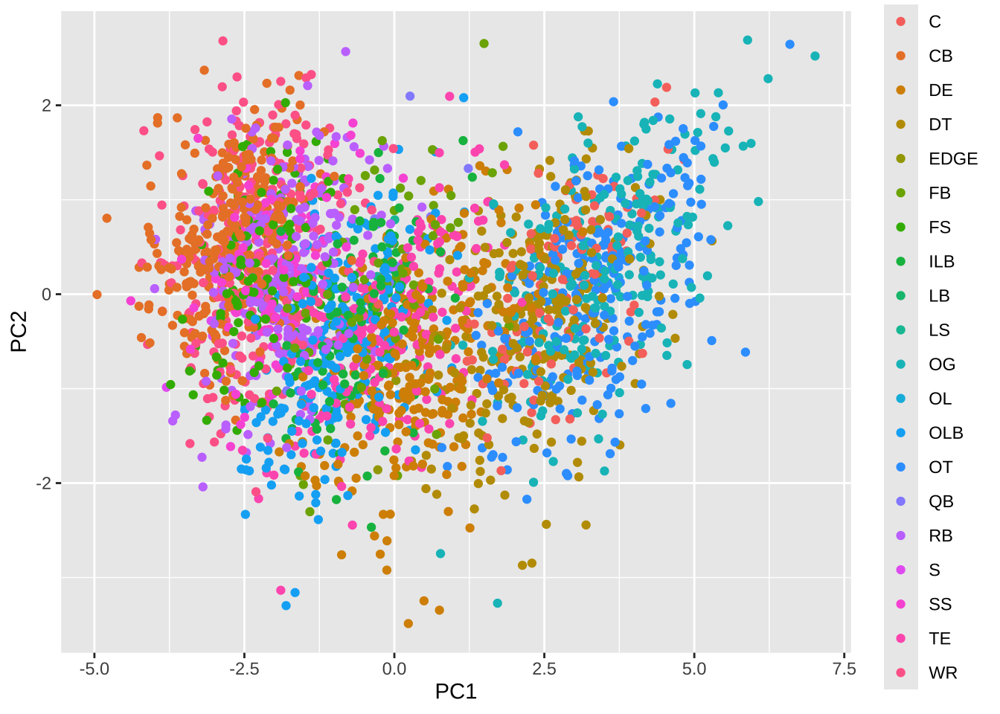
combine.pcscore %>% ggplot(aes(PC2,PC3, col= position))+
geom_point()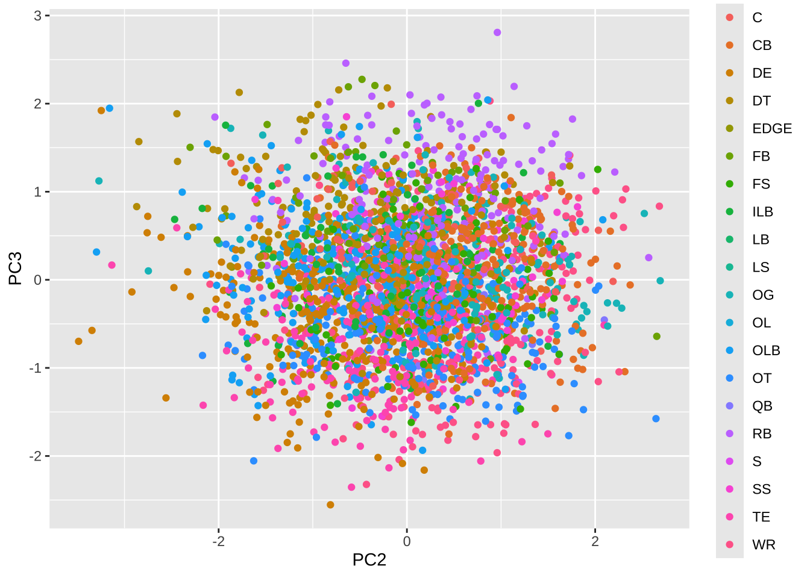
#Graph of individuals.
#Individuals with a similar profile are grouped together.
fviz_pca_ind(combine.pr,
col.ind = "cos2", # Color by the quality of representation
geom = c("point"),
gradient.cols = c("#00AFBB", "#E7B800", "#FC4E07"),
repel = TRUE # Avoid text overlapping
)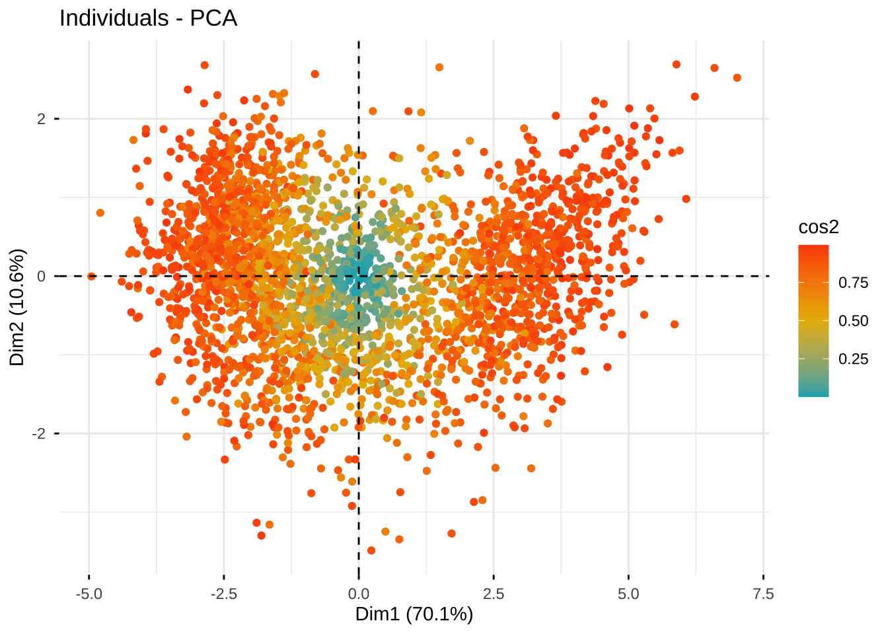
# Graph of variables.
# Positive correlated variables point to the same side of the plot.
# Negative correlated variables point to opposite sides of the graph.
fviz_pca_var(combine.pr,
col.var = "contrib", # Color by contributions to the PC
gradient.cols = c("#00AFBB", "#E7B800", "#FC4E07"),
repel = TRUE # Avoid text overlapping
)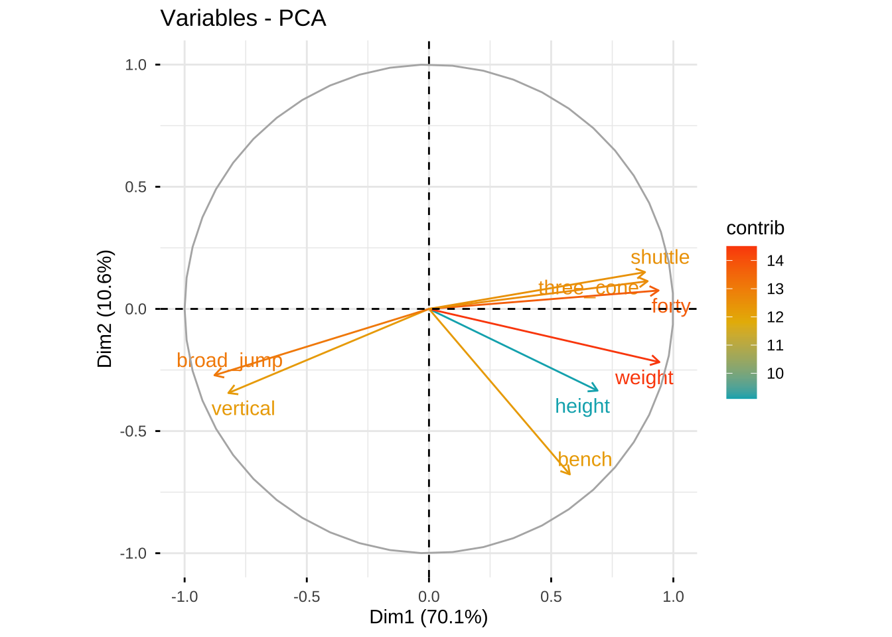
#Biplot of individuals and variables
fviz_pca_biplot(combine.pr, repel = TRUE,
geom = c("point"),
col.var = "#2E9FDF", # Variables color
col.ind = "#696969" # Individuals color
)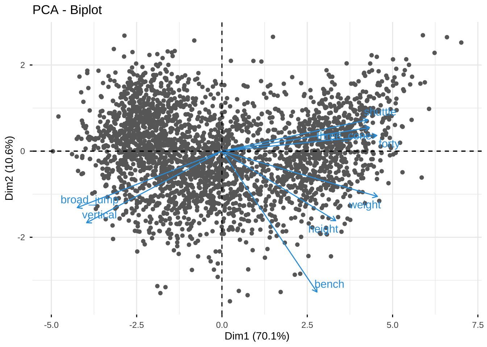
table(data$position)
C CB DE DT EDGE FB FS ILB LB LS OG OL OLB OT QB RB
115 311 279 253 8 77 123 130 1 2 232 1 240 273 12 245
S SS TE WR
7 107 194 275 | 缩写 | 英文全称 | 中文解释 |
|---|---|---|
| C | Center | 中锋，进攻线中央负责开球给四分卫 |
| CB | Cornerback | 角卫，防守组主要负责盯防外接手 |
| DE | Defensive End | 防守端锋，防守线两侧，冲传和防跑 |
| DT | Defensive Tackle | 防守截锋，防守线中间，堵截跑动 |
| EDGE | Edge Rusher (OLB/DE) | 边锋冲传手，专注于冲击四分卫 |
| FB | Fullback | 近卫跑卫，主要负责掩护和短码冲球 |
| FS | Free Safety | 游动安全卫，防守后场，负责深区 |
| ILB | Inside Linebacker | 内线卫，防守中路，兼顾跑动和传球 |
| LB | Linebacker | 线卫，防守二线，分内外线卫 |
| LS | Long Snapper | 长传手，专门负责长开球（开球、射门） |
| OG | Offensive Guard | 进攻护锋，中锋两侧，保护四分卫 |
| OL | Offensive Lineman | 进攻线球员总称，包括C、OG、OT等 |
| OLB | Outside Linebacker | 外线卫，负责边路防守和冲传 |
| OT | Offensive Tackle | 进攻截锋，进攻线两侧，保护四分卫 |
| QB | Quarterback | 四分卫，进攻组织核心，传球主力 |
| RB | Running Back | 跑卫，负责持球冲跑或接球 |
| S | Safety | 安全卫，泛指FS和SS |
| SS | Strong Safety | 强侧安全卫，靠近防跑，兼顾传球 |
| TE | Tight End | 近端锋，既能接球也参与阻挡 |
| WR | Wide Receiver | 外接手，主要负责接球推进 |
table(data$position) %>%
as.data.frame() %>%
arrange(desc(Freq)) Var1 Freq
1 CB 311
2 DE 279
3 WR 275
4 OT 273
5 DT 253
6 RB 245
7 OLB 240
8 OG 232
9 TE 194
10 ILB 130
11 FS 123
12 C 115
13 SS 107
14 FB 77
15 QB 12
16 EDGE 8
17 S 7
18 LS 2
19 LB 1
20 OL 1combine.pcscore %>%
filter(position %in% c("CB","DE","WR")) %>%
ggplot(aes(PC1, fill= position))+
geom_histogram() +
facet_wrap(~position, ncol = 1)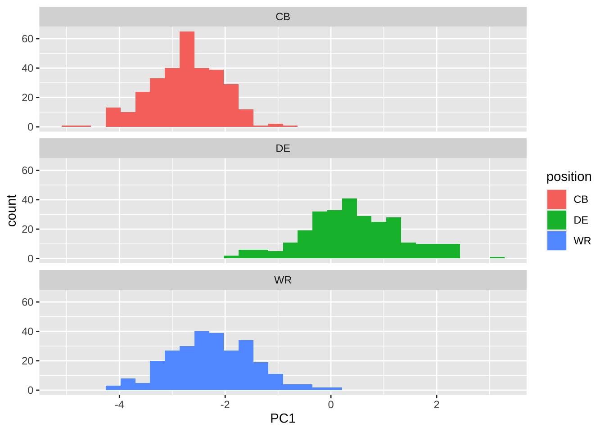
PC1: “体型+速度/敏捷主成分”
DE Defensive End 防守端锋，防守线两侧，冲传和防跑
CB Cornerback 角卫，防守组主要负责盯防外接手
WR Wide Receiver 外接手，主要负责接球推进
第5步 针对主成分得分的进一步分析
不同位置球员的主成分得分比较
# 绘制PC1主成分得分按位置分组的箱线图
combine.pcscore %>%
ggplot(aes(x = fct_reorder(position, PC1, .fun = median, .desc = TRUE),
y = PC1, fill = position)) +
scale_fill_brewer(palette = "Set3") +
geom_boxplot() +
theme(axis.text.x = element_text(angle = 45, hjust = 1)) +
labs(title = "不同位置球员PC1主成分得分分布", x = "position", y = "PC1得分")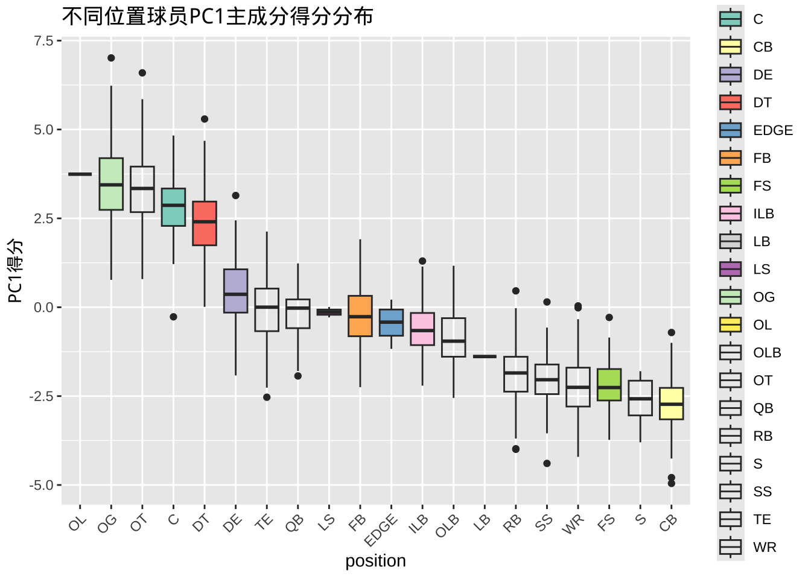
# 绘制PC2主成分得分按位置分组的箱线图
combine.pcscore %>%
ggplot(aes(x = fct_reorder(position, PC2, .fun = median, .desc = TRUE),
y = PC2, fill = position)) +
scale_fill_brewer(palette = "Pastel1") +
geom_boxplot() +
theme(axis.text.x = element_text(angle = 45, hjust = 1)) +
labs(title = "不同位置球员PC2主成分得分分布", y = "PC2得分")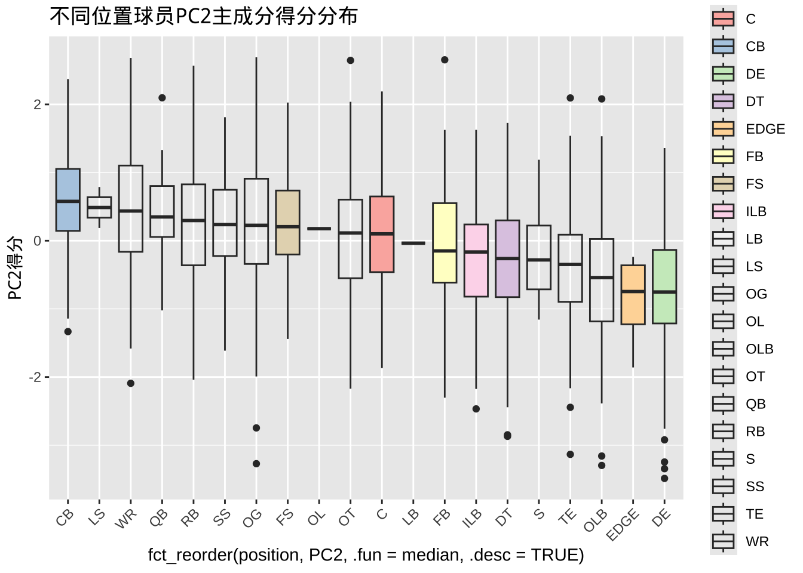
# 方差分析：不同位置的PC1得分是否有显著差异
anova_pc1 <- aov(PC1 ~ position, data = combine.pcscore)
summary(anova_pc1) Df Sum Sq Mean Sq F value Pr(>F)
position 19 14133 743.9 1046 <2e-16 ***
Residuals 2865 2037 0.7
---
Signif. codes: 0 '***' 0.001 '**' 0.01 '*' 0.05 '.' 0.1 ' ' 1# 方差分析：不同位置的PC2得分是否有显著差异
anova_pc2 <- aov(PC2 ~ position, data = combine.pcscore)
summary(anova_pc2) Df Sum Sq Mean Sq F value Pr(>F)
position 19 497.8 26.198 38.33 <2e-16 ***
Residuals 2865 1958.1 0.683
---
Signif. codes: 0 '***' 0.001 '**' 0.01 '*' 0.05 '.' 0.1 ' ' 1基于主成分得分的聚类分析
# k-means聚类（以2类为例）
set.seed(123)
km <- kmeans(combine.pcscore[, c("PC1", "PC2")], centers = 3)
combine.pcscore$cluster <- as.factor(km$cluster)
# 可视化聚类结果
ggplot(combine.pcscore, aes(PC1, PC2, color = cluster)) +
geom_point() +
labs(title = "基于主成分得分的球员聚类")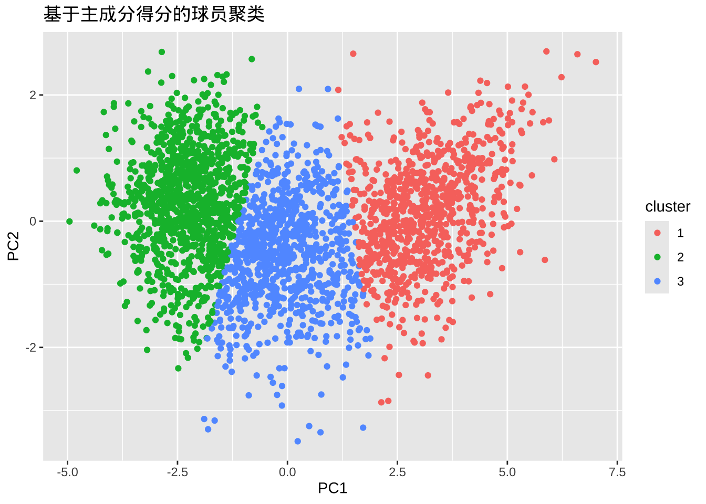
聚类与位置的对应关系
prop.table(table(combine.pcscore$position, combine.pcscore$cluster), 1)
1 2 3
C 0.930434783 0.000000000 0.069565217
CB 0.000000000 0.996784566 0.003215434
DE 0.132616487 0.021505376 0.845878136
DT 0.790513834 0.000000000 0.209486166
EDGE 0.000000000 0.000000000 1.000000000
FB 0.051948052 0.116883117 0.831168831
FS 0.000000000 0.991869919 0.008130081
ILB 0.007692308 0.153846154 0.838461538
LB 0.000000000 1.000000000 0.000000000
LS 0.000000000 0.000000000 1.000000000
OG 0.969827586 0.000000000 0.030172414
OL 1.000000000 0.000000000 0.000000000
OLB 0.004166667 0.262500000 0.733333333
OT 0.945054945 0.000000000 0.054945055
QB 0.083333333 0.250000000 0.666666667
RB 0.000000000 0.881632653 0.118367347
S 0.000000000 1.000000000 0.000000000
SS 0.000000000 0.962616822 0.037383178
TE 0.051546392 0.061855670 0.886597938
WR 0.000000000 0.956363636 0.0436363641号聚类（Cluster 1）
主要特征： 高度集中于内线和进攻线球员： OL（进攻线）: 100% OG（进攻护锋）: 97% OT（进攻截锋）: 95% C（中锋）: 93% DT（防守截锋）: 79%
这些位置典型特征是体型大、力量强，符合PCA能力分型的“体型/力量主导”类别。
2号聚类（Cluster 2）
主要特征： 集中于速度型和二线防守球员： CB（角卫）: 99.7% FS（游动安全卫）: 99% LB（线卫）: 100% S（安全卫）: 100% SS（强侧安全卫）: 96% WR（外接手）: 96% RB（跑卫）: 88%
这些位置通常身材相对较小，速度、灵活性、爆发力强，对应“敏捷/速度主导”能力分型。
3号聚类（Cluster 3）
主要特征： 集中于力量+爆发型或多面手球员： EDGE（冲传手）: 100% LS（长传手）: 100% DE（防守端锋）: 85% FB（近卫跑卫）: 83% ILB（内线卫）: 84% OLB（外线卫）: 73% TE（近端锋）: 89% QB（四分卫）: 67% DE、FB、TE、QB、OLB、ILB等为多功能或力量/爆发型球员，显示这些球员的身体素质在主成分空间中更接近第三类。
这些位置球员兼具力量、体型和一定灵活性，属于“力量/多面手型”分型。